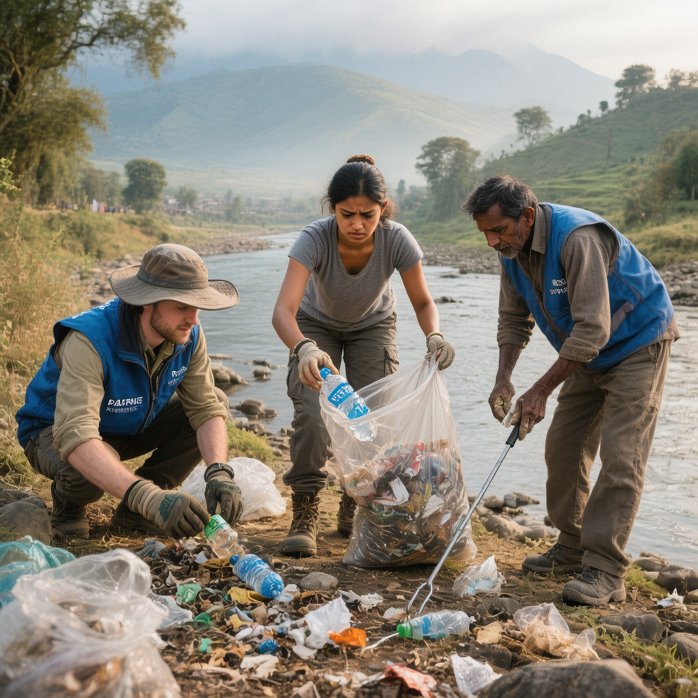
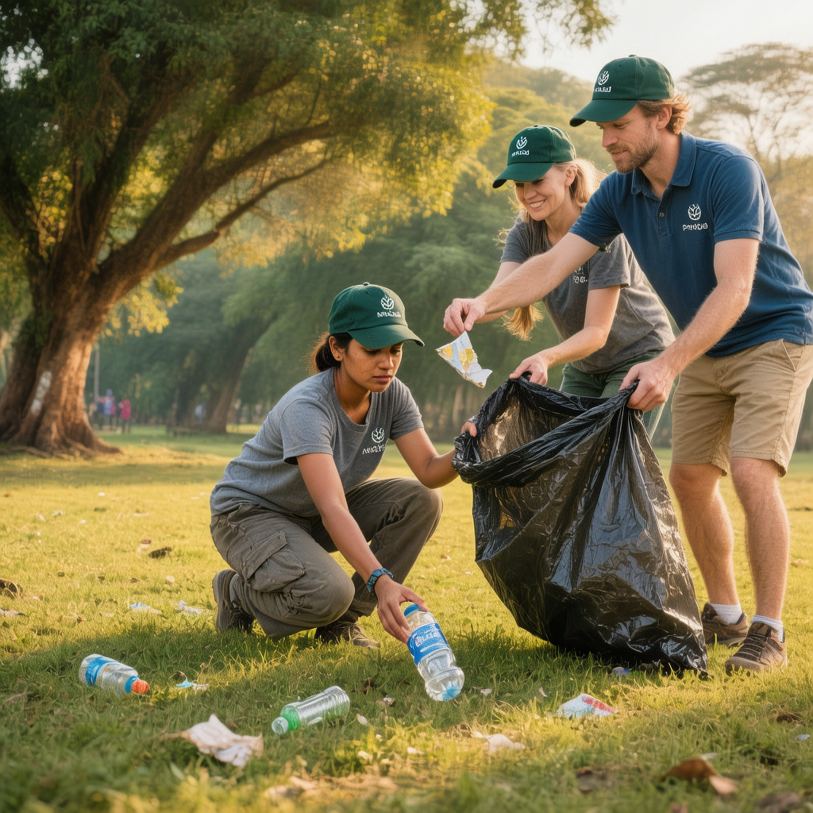
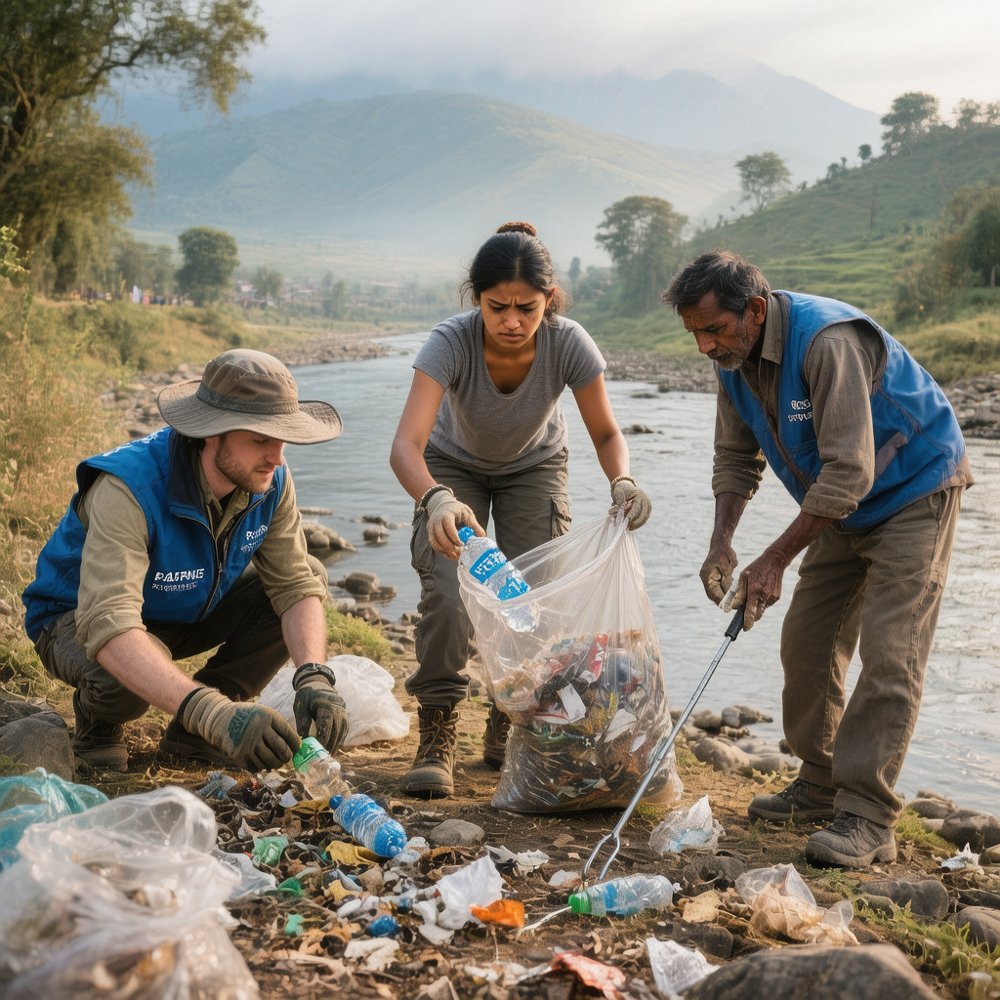
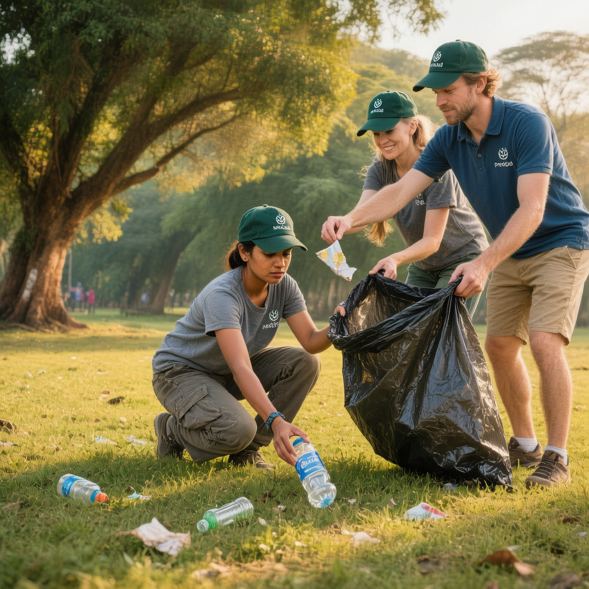

Environment Program
Fostering a culture of conservation for a cleaner, greener Chitwan.
About the Program
At the heart of Green Society Nepal's mission is a deep commitment to environmental stewardship. Our Environment Program is a multi-faceted initiative aimed at preserving the natural beauty of the Chitwan region and mitigating the impacts of pollution.
We regularly organize and lead community-driven activities, including large-scale tree plantation drives to reforest degraded areas, river and jungle clean-up campaigns to remove harmful waste, and waste management training for local businesses and residents. Through public awareness campaigns in schools and communities, we aim to inspire a new generation of environmental guardians dedicated to protecting our shared natural heritage.
Project Gallery
 



Impact and Future Goals
The impact of our Environment Program is visible not just in the cleaner riverbanks and newly planted saplings, but in the community's mindset. By removing hundreds of kilograms of plastic waste, we have made a tangible difference in protecting the delicate ecosystem of Chitwan. Most profoundly, our continuous awareness campaigns have fostered a growing sense of shared responsibility, empowering residents to become active stewards of their own environment.
Looking ahead, our work is far from over. We aim to expand our reforestation efforts to create vital green corridors for wildlife, introduce sustainable waste segregation programs in partnership with local businesses, and establish permanent "eco-clubs" in schools. These goals are ambitious, but they are achievable. Your support will not just clean a river for a day; it will help build a sustainable, green future for Chitwan for generations to come.